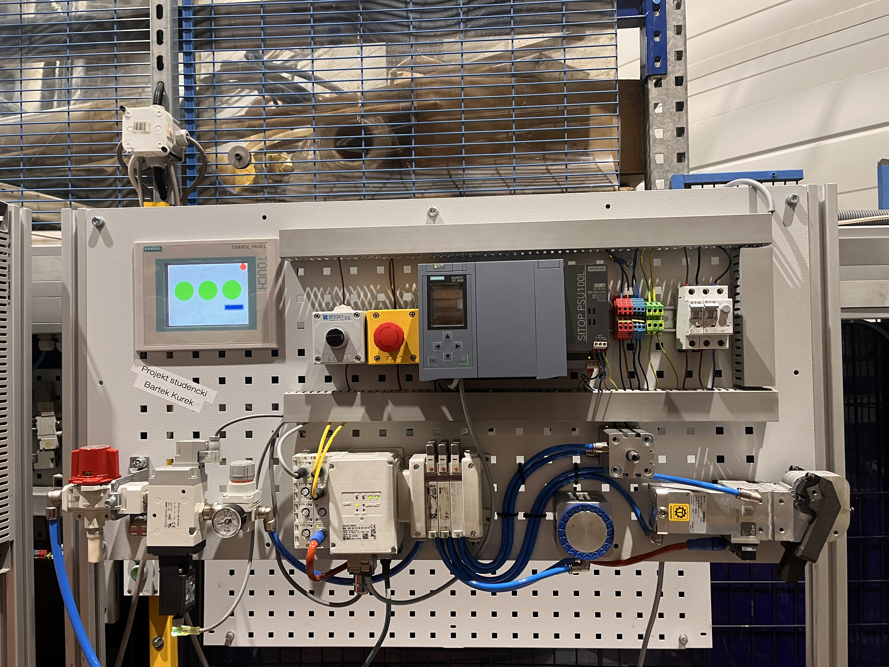

Stanowisko dydaktyczne o nazwie "Pneumatyka" zostało zaprojektowane i zmontowane od podstaw, wykorzystując sterownik Siemens S7-1500 oraz panel HMI do interakcji z użytkownikiem. Układ rozpoczyna się od ręcznego zaworu głównego, po którym następuje zawór elektryczny z czujnikiem oraz manometr, umożliwiający precyzyjną regulację powietrza. Powietrze trafia następnie na wyspę zaworową SMC, z której jest rozprowadzane do trzech siłowników: magnetycznego, przesuwnego oraz obrotowego. Stanowisko zawiera czujniki pozycji siłowników, które przekazują informacje zwrotne do systemu sterowania. Projekt obejmował kompletny proces projektowania oraz montaż, obejmujący zarówno składanie sprzętu, jak i integrację systemu.
